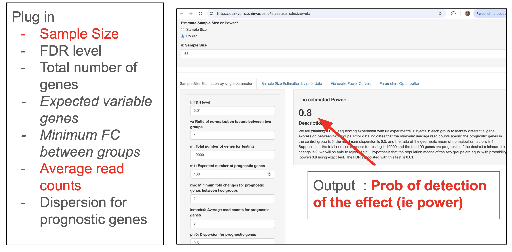
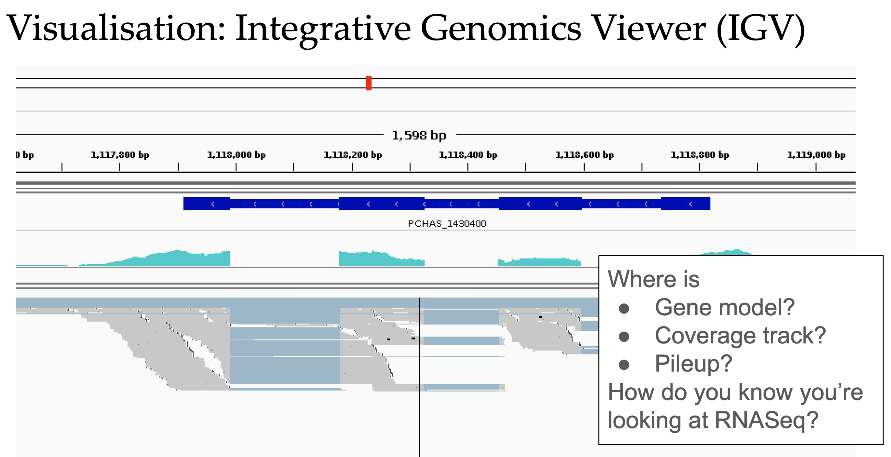
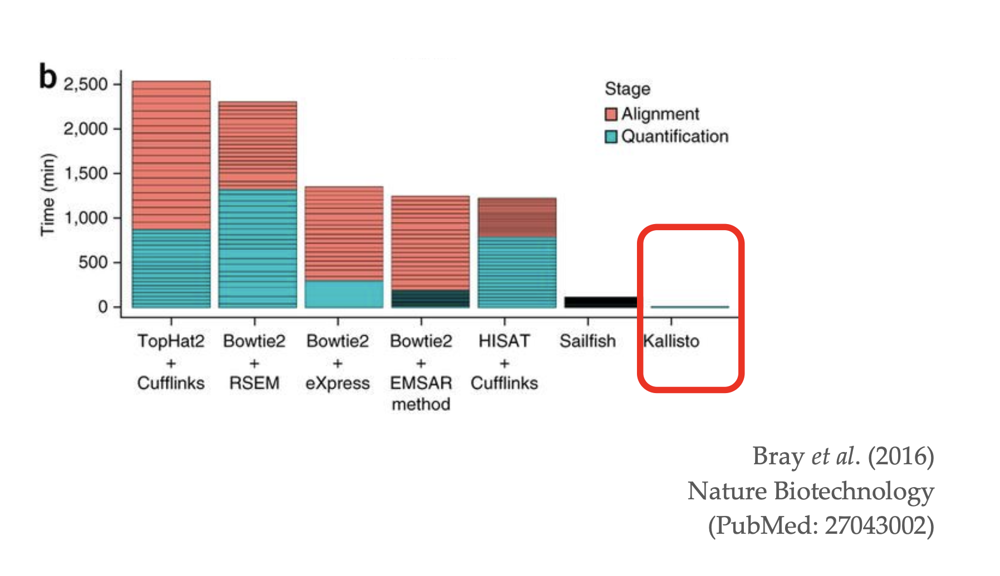
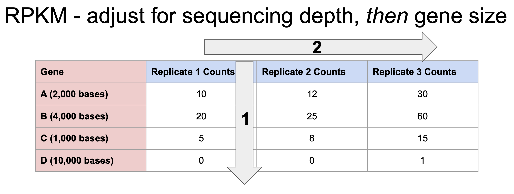
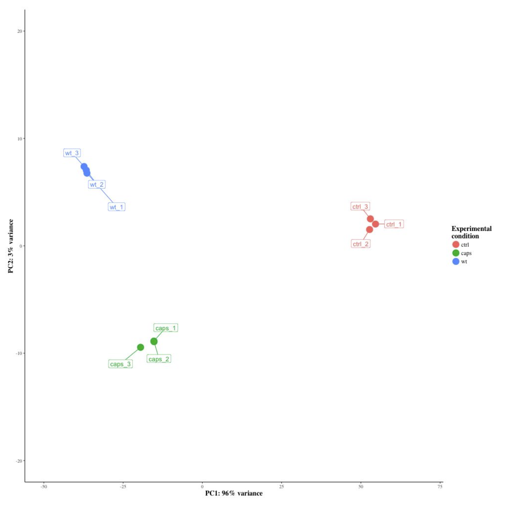
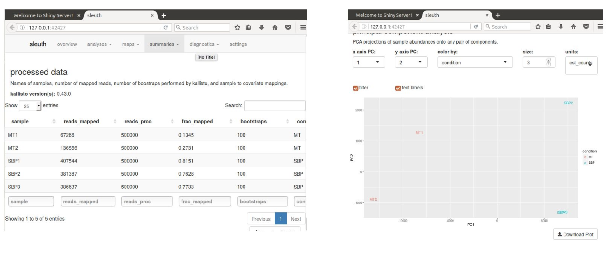

Manual
Differential Expression using RNA-Seq
Instructor: Vivek Iyer
Source Material: Based extensively on slides by Victoria Offord (Wellcome Sanger Institute)
Date: 7 June 2024
Learning Objectives
Appreciate the important aspects of RNASeq experiment design • Understand the various technical steps in RNASeq pipelines • Align RNA-Seq reads to a reference genome and a transcriptome • Visualise transcription data using standard tools • Quantify the expression values of your transcripts using standard tools • Perform QC of NGS transcriptomic data • Interpret differential gene expression data
Introduction and Context
The transcriptome is defined as “the complete set of transcripts present in a cell, along with their quantities, at a specific developmental stage or under specific conditions” Wang Z, Gerstein M, Snyder M. RNA-Seq: a revolutionary tool for transcriptomics. Nat Rev Genet. 2009 Jan;10(1):57-63. doi: 10.1038/nrg2484. PMID: 19015660; PMCID: PMC2949280.
It represents a snapshot of gene expression at a fixed point in time and under fixed environmental or biological conditions. RNA sequencing (RNA-Seq), which relies on next-generation sequencing (NGS) technology, is commonly used to measure the transcriptome. For example, in Plasmodium berghei, the transcriptome is approximately 10 million bases, covering about 50% of the genome (20 million bases), with large exons relative to introns and intergenic regions. In contrast, in Homo sapiens, the transcriptome comprises about 10% of the genome, and exons are small compared to the much larger introns and intergenic regions.


Experimental Design
A successful RNA-Seq study begins with a carefully planned experimental design tailored to the biological question of interest. Key factors to consider include the type of library preparation, the sequencing depth, and the number of replicates. These decisions significantly impact the quality and interpretability of the resulting data.
Library Preparation
Total RNA includes a mixture of mRNA, rRNA, tRNA, and various regulatory RNAs. Ribosomal RNA (rRNA) can constitute over 90% of total RNA, so it is essential to either enrich for the small fraction of mRNA (1–2%) or deplete the rRNA. mRNA enrichment methods typically require high-quality RNA, often assessed using the RNA Integrity Number (RIN), and may not be suitable for certain sample types such as tissue biopsies. In bacteria, where mRNA is not polyadenylated, rRNA depletion is generally required instead of poly-A selection. It is also important to be aware of the specific library preparation protocol being used, as some may remove small RNAs that could be relevant to the study.
Library Type
The choice between stranded and unstranded libraries is another critical consideration. Strand-specific protocols preserve the information about which DNA strand the RNA was transcribed from, which is particularly valuable for distinguishing between overlapping or antisense transcripts. Another decision involves using single-end or paired-end sequencing. Paired-end sequencing is more informative and is particularly advantageous for discovering new transcripts or analyzing isoform expression, as it helps reconstruct transcript structures. However, it’s worth noting that fewer than 55% of reads typically span more than one exon.

Replicates
Replication is vital for capturing variation and ensuring the robustness of RNA-Seq results. Biological replicates involve using distinct biological samples—such as different individuals or cultures—under the same experimental conditions. These replicates are essential for assessing biological variability and drawing meaningful conclusions. In contrast, technical replicates are repeated measurements of the same sample and are used to assess variation introduced by equipment or protocols. While technical replicates are generally not required, careful sample layout and sequencing lane assignments can help control for technical variation. Some analysis tools also allow adjustments based on these technical factors or known controls (“spike-ins”).
Careful attention to these elements of experimental design will enhance the quality and interpretability of RNA-Seq data, ensuring that the results are both reliable and biologically meaningful.

Sequencing Depth
Sequencing depth is a key factor in RNA-Seq experimental design, as it determines how well transcripts—especially those with low expression—can be detected. For standard human transcriptome analysis using 100 base pair (bp) paired-end reads, a sequencing depth of approximately 30 million reads per sample is typically sufficient. However, for studies aiming to identify novel transcripts or rare isoforms, deeper sequencing of 50 to 100 million reads may be necessary. As an example, 30 million 100 bp paired-end reads provide roughly 3 × 10⁹ bases of sequence. Given that the human transcriptome is around 150 megabases (1.5 × 10⁸ bases), this corresponds to approximately 20× coverage, meaning one can reasonably distinguish between full, half, or quarter expression levels.
While deeper sequencing can improve sensitivity for detecting differentially expressed (DE) genes, especially those with low expression, it is subject to diminishing returns beyond a certain point. On the other hand, increasing the number of biological replicates enhances the statistical power to detect true changes in gene expression. Replicates improve the accuracy of log fold-change (logFC) estimates and help quantify variability in expression, particularly for genes with low abundance. Therefore, when designing an RNA-Seq experiment, it’s crucial to balance sequencing depth and replication according to your study goals.
To optimize this balance, tools such as RNA-Seq power calculators—like the one available at https://cqs-vumc.shinyapps.io/rnaseqsamplesizeweb/—can help estimate the appropriate sample size for your experiment. For further guidance, see Liu et al. (2014), Bioinformatics, which discusses the trade-offs between sequencing depth and replication in differential expression studies.
RNA-Seq Data Analysis Pipelines
Key Steps in an RNA-Seq Analysis Pipeline
Every RNA-Seq analysis pipeline, regardless of the tools used, typically follows three core steps. First, we determine which genes or transcripts our sequencing reads belong to—this is done through mapping to a reference genome or transcriptome, or through de novo assembly. Second, we quantify how many reads align to each gene or transcript. Third, we assess whether gene or transcript expression levels differ between sample groups through differential gene expression (DGE) analysis. While these steps are common, there is no universal pipeline that suits every analysis; the best approach depends on your organism, research goals, available resources, and data quality.
Mapping RNA-Seq Reads to the Genome with HISAT2

Mapping RNA-Seq reads to a reference genome is useful for assessing overall data quality and examining the structure of genes, particularly in eukaryotes where introns are spliced out of mature mRNA. Splice-aware aligners are required to handle these complexities. HISAT2 is a widely used aligner that balances speed, accuracy, and low memory usage, and is especially good at discovering novel splice junctions. Alternatives include STAR, known for its speed in high-throughput settings, and Bowtie2, which is often used for more general alignment tasks. HISAT2 is particularly efficient in terms of memory footprint and splice discovery, making it a good choice for many genome-based workflows. However, after mapping, separate quantification steps are needed to count reads per gene or transcript.


Mapping to the Transcriptome and Quantifying Reads with Kallisto

Kallisto offers a much faster alternative by mapping reads to a reference transcriptome rather than the genome. It uses a two-step process: first, it builds an index from the set of known spliced transcript sequences; second, it quantifies read abundance through pseudoalignment. Pseudoalignment significantly speeds up the process by determining which transcripts reads belong to without calculating exact alignment positions. This method is efficient and includes quantification as part of the process.

One limitation of Kallisto is that it cannot detect novel transcripts—it relies entirely on a predefined transcriptome. Therefore, it’s not suitable if your goal is to explore new splicing events or novel isoforms. Additionally, the presence of multiple isoforms per gene introduces mapping ambiguity. However, because Kallisto maps to spliced transcripts, it accounts for this ambiguity and can provide transcript-specific read counts.
Choosing Between Genome and Transcriptome Mapping
Mapping to the genome using tools like HISAT2, followed by visualization in IGV (Integrative Genomics Viewer), is ideal for quality control and the discovery of novel splicing events. It does, however, require more computational resources and a separate quantification step. If resources permit and novel transcript discovery is important, this method is recommended.
In contrast, mapping to the transcriptome with Kallisto is extremely fast and includes quantification by default. This approach is optimal when a well-annotated transcriptome is available and the focus is on efficiency rather than discovery of new transcript variants. Ultimately, the choice between genome and transcriptome mapping should align with your analysis objectives and the biological questions you aim to answer.
Normalisation in RNA-Seq Analysis

Normalization is a crucial step in RNA-Seq analysis, helping to correct for technical biases that can distort biological interpretation. For example, sequencing runs with greater depth will naturally produce more reads for each gene, and longer genes will accumulate more reads simply due to their size. To account for these issues, most normalization methods adjust for both sequencing depth and gene length. Common normalization methods include RPKM (Reads Per Kilobase per Million), FPKM (Fragments Per Kilobase per Million), and TPM (Transcripts Per Million). While these approaches help standardize read counts, they can struggle with datasets containing a few highly expressed genes that skew the overall distribution. As a result, more advanced normalization techniques—such as DESeq2’s regularized log transformation (rlog) or Sleuth’s model-based normalization—are often preferred for differential expression analysis.

FPKM is a refinement of RPKM, specifically designed for paired-end sequencing. It accounts for the fact that two reads may map to a single RNA fragment and prevents double-counting. While these methods provide a reasonable first-pass normalization, more robust statistical frameworks are generally required for high-quality differential expression analysis.
The Importance of Quality Control (QC)
Quality control is essential in RNA-Seq workflows to ensure that the data used for downstream analysis is reliable and free from avoidable technical errors. During sample collection, library preparation, and sequencing, multiple things can go wrong. RNA may degrade if samples are mishandled, sequencing lanes might perform inconsistently, and certain genomic regions may pose technical challenges (e.g., sequencing hotspots or local capture inefficiencies). These issues can lead to false positives or false negatives in differential expression results by introducing noise or systematic bias into the dataset. Identifying and removing problematic samples or outliers helps preserve the integrity of the analysis.
Using PCA for QC

Principal Component Analysis (PCA) is a widely used dimensionality reduction technique in RNA-Seq QC. RNA-Seq datasets often consist of tens of thousands of features (e.g., ~60,000 genes), making direct interpretation difficult. PCA transforms this high-dimensional data into a new coordinate system (principal components), where each new dimension captures maximal, independent variance in the data. By visualizing the first few principal components—typically PC1 to PC4—you can quickly spot outlying samples that behave differently from the rest. This helps flag potential issues early and improves the consistency and reliability of downstream results.
Determining Differential Expression
To identify differentially expressed genes, a variety of statistical tools are available, including DESeq2, EdgeR, Limma-Voom, and Sleuth (which is specifically designed to work with Kallisto output). These methods improve on simpler approaches like per-gene t-tests, which are usually inappropriate due to limited sample sizes and the need to model variance across genes. Modern RNA-Seq tools incorporate “size factors” to account for differences in sequencing depth and use advanced statistical modeling to estimate gene-specific variance. Most tools also include mechanisms for testing complex experimental designs and adjusting for multiple testing, often reporting both p-values and q-values to help control false discovery rates.
Quality Control with Sleuth

Sleuth integrates normalization, statistical modeling, and visualization for data derived from pseudoalignment tools like Kallisto. It provides built-in quality control metrics and supports flexible experimental designs, making it a convenient and powerful option for users focused on transcript-level quantification. With Sleuth, users can perform PCA, visualize sample distributions, and explore model fits directly within the same environment, streamlining the QC and analysis workflow.
What to Do with a List of Differentially Expressed Genes
Once you’ve generated a list of differentially expressed genes, the next challenge is interpreting what it means biologically. If you have a predefined hypothesis, now is the time to test it. Otherwise, you can begin exploring the list using tools for functional enrichment and pathway analysis, such as Gene Ontology (GO) term enrichment, pathway analysis tools like GSEA, TopGO, InnateDB, or commercial options like Ingenuity Pathway Analysis. Another approach is manual exploration—read relevant literature, investigate gene functions, and look for patterns. Visual tools like volcano plots (effect size vs. p-value) are also useful for identifying genes of interest. From there, you can formulate new hypotheses and decide whether to pursue further bioinformatic exploration or design the next set of wet lab experiments.
Practical Exercise
·Organism: Plasmodium chabaudi (rodent malaria parasite).
·Compare transcriptomes between mosquito-transmitted (MT) and serial blood passage (SBP) parasites.
·Biological Question: Is the parasite’s transcriptome different after mosquito passage?
Appendix: Key Tools Mentioned
| Tool | Purpose |
| HISAT2 | Splice-aware genome alignment |
| Kallisto | Fast transcriptome pseudoalignment |
| IGV | Visualization |
| Sleuth | DGE and QC analysis |
| DESeq2, EdgeR | DGE analysis |